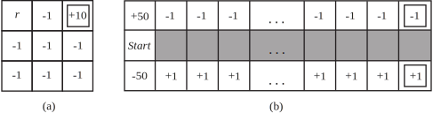

17.1 [mdp-model-exercise]For the $4\times 3$ world shown in Figure sequential-decision-world-figure, calculate which squares can be reached from (1,1) by the action sequence $[{Up},{Up},{Right},{Right},{Right}]$ and with what probabilities. Explain how this computation is related to the prediction task (see Section general-filtering-section) for a hidden Markov model.
17.2 [mdp-model-exercise]For the $4\times 3$ world shown in Figure sequential-decision-world-figure, calculate which squares can be reached from (1,1) by the action sequence $[{Right},{Right},{Right},{Up},{Up}]$ and with what probabilities. Explain how this computation is related to the prediction task (see Section general-filtering-section) for a hidden Markov model.
17.3 Select a specific member of the set of policies that are optimal for $R(s)>0$ as shown in Figure sequential-decision-policies-figure(b), and calculate the fraction of time the agent spends in each state, in the limit, if the policy is executed forever. (Hint: Construct the state-to-state transition probability matrix corresponding to the policy and see Exercise markov-convergence-exercise.)
17.4 [nonseparable-exercise]Suppose that we define the utility of a state sequence to be the maximum reward obtained in any state in the sequence. Show that this utility function does not result in stationary preferences between state sequences. Is it still possible to define a utility function on states such that MEU decision making gives optimal behavior?
17.5 Can any finite search problem be translated exactly into a Markov decision problem such that an optimal solution of the latter is also an optimal solution of the former? If so, explain precisely how to translate the problem and how to translate the solution back; if not, explain precisely why not (i.e., give a counterexample).
17.6 [reward-equivalence-exercise] Sometimes MDPs are formulated with a reward function $R(s,a)$ that depends on the action taken or with a reward function $R(s,a,s')$ that also depends on the outcome state.
Write the Bellman equations for these formulations.
Show how an MDP with reward function $R(s,a,s')$ can be transformed into a different MDP with reward function $R(s,a)$, such that optimal policies in the new MDP correspond exactly to optimal policies in the original MDP.
Now do the same to convert MDPs with $R(s,a)$ into MDPs with $R(s)$.
17.7 [threshold-cost-exercise]For the environment shown in Figure sequential-decision-world-figure, find all the threshold values for $R(s)$ such that the optimal policy changes when the threshold is crossed. You will need a way to calculate the optimal policy and its value for fixed $R(s)$. (Hint: Prove that the value of any fixed policy varies linearly with $R(s)$.)
17.8 [vi-contraction-exercise] Equation (vi-contraction-equation) on page vi-contraction-equation states that the Bellman operator is a contraction.
Show that, for any functions $f$ and $g$, $$|\max_a f(a) - \max_a g(a)| \leq \max_a |f(a) - g(a)|\ .$$
Write out an expression for $|(B\,U_i - B\,U'_i)(s)|$ and then apply the result from (a) to complete the proof that the Bellman operator is a contraction.
17.9 This exercise considers two-player MDPs that correspond to zero-sum, turn-taking games like those in Chapter game-playing-chapter. Let the players be $A$ and $B$, and let $R(s)$ be the reward for player $A$ in state $s$. (The reward for $B$ is always equal and opposite.)
Let $U_A(s)$ be the utility of state $s$ when it is $A$’s turn to move in $s$, and let $U_B(s)$ be the utility of state $s$ when it is $B$’s turn to move in $s$. All rewards and utilities are calculated from $A$’s point of view (just as in a minimax game tree). Write down Bellman equations defining $U_A(s)$ and $U_B(s)$.
Explain how to do two-player value iteration with these equations, and define a suitable termination criterion.
Consider the game described in Figure line-game4-figure on page line-game4-figure. Draw the state space (rather than the game tree), showing the moves by $A$ as solid lines and moves by $B$ as dashed lines. Mark each state with $R(s)$. You will find it helpful to arrange the states $(s_A,s_B)$ on a two-dimensional grid, using $s_A$ and $s_B$ as “coordinates.”
Now apply two-player value iteration to solve this game, and derive the optimal policy.

17.10 [3x3-mdp-exercise] Consider the $3 \times 3$ world shown in Figure grid-mdp-figure(a). The transition model is the same as in the $4\times 3$ Figure sequential-decision-world-figure: 80% of the time the agent goes in the direction it selects; the rest of the time it moves at right angles to the intended direction.
Implement value iteration for this world for each value of $r$ below. Use discounted rewards with a discount factor of 0.99. Show the policy obtained in each case. Explain intuitively why the value of $r$ leads to each policy.
$r = -100$
$r = -3$
$r = 0$
$r = +3$
17.11 [101x3-mdp-exercise] Consider the $101 \times 3$ world shown in Figure grid-mdp-figure(b). In the start state the agent has a choice of two deterministic actions, Up or Down, but in the other states the agent has one deterministic action, Right. Assuming a discounted reward function, for what values of the discount $\gamma$ should the agent choose Up and for which Down? Compute the utility of each action as a function of $\gamma$. (Note that this simple example actually reflects many real-world situations in which one must weigh the value of an immediate action versus the potential continual long-term consequences, such as choosing to dump pollutants into a lake.)
17.12 Consider an undiscounted MDP having three states, (1, 2, 3), with rewards $-1$, $-2$, $0$, respectively. State 3 is a terminal state. In states 1 and 2 there are two possible actions: $a$ and $b$. The transition model is as follows:
In state 1, action $a$ moves the agent to state 2 with probability 0.8 and makes the agent stay put with probability 0.2.
In state 2, action $a$ moves the agent to state 1 with probability 0.8 and makes the agent stay put with probability 0.2.
In either state 1 or state 2, action $b$ moves the agent to state 3 with probability 0.1 and makes the agent stay put with probability 0.9.
Answer the following questions:
What can be determined qualitatively about the optimal policy in states 1 and 2?
Apply policy iteration, showing each step in full, to determine the optimal policy and the values of states 1 and 2. Assume that the initial policy has action $b$ in both states.
What happens to policy iteration if the initial policy has action $a$ in both states? Does discounting help? Does the optimal policy depend on the discount factor?
17.13 Consider the $4\times 3$ world shown in Figure sequential-decision-world-figure.
Implement an environment simulator for this environment, such that the specific geography of the environment is easily altered. Some code for doing this is already in the online code repository.
Create an agent that uses policy iteration, and measure its performance in the environment simulator from various starting states. Perform several experiments from each starting state, and compare the average total reward received per run with the utility of the state, as determined by your algorithm.
Experiment with increasing the size of the environment. How does the run time for policy iteration vary with the size of the environment?
17.14 [policy-loss-exercise]How can the value determination algorithm be used to calculate the expected loss experienced by an agent using a given set of utility estimates ${U}$ and an estimated model ${P}$, compared with an agent using correct values?
17.15 [4x3-pomdp-exercise] Let the initial belief state $b_0$ for the $4\times 3$ POMDP on page 4x3-pomdp-page be the uniform distribution over the nonterminal states, i.e., $< \frac{1}{9},\frac{1}{9},\frac{1}{9},\frac{1}{9},\frac{1}{9},\frac{1}{9},\frac{1}{9},\frac{1}{9},\frac{1}{9},0,0 >$. Calculate the exact belief state $b_1$ after the agent moves and its sensor reports 1 adjacent wall. Also calculate $b_2$ assuming that the same thing happens again.
17.16 What is the time complexity of $d$ steps of POMDP value iteration for a sensorless environment?
17.17 [2state-pomdp-exercise] Consider a version of the two-state POMDP on page 2state-pomdp-page in which the sensor is 90% reliable in state 0 but provides no information in state 1 (that is, it reports 0 or 1 with equal probability). Analyze, either qualitatively or quantitatively, the utility function and the optimal policy for this problem.
17.18 [dominant-equilibrium-exercise]Show that a dominant strategy equilibrium is a Nash equilibrium, but not vice versa.
17.19 In the children’s game of rock–paper–scissors each player reveals at the same time a choice of rock, paper, or scissors. Paper wraps rock, rock blunts scissors, and scissors cut paper. In the extended version rock–paper–scissors–fire–water, fire beats rock, paper, and scissors; rock, paper, and scissors beat water; and water beats fire. Write out the payoff matrix and find a mixed-strategy solution to this game.
17.20 Solve the game of three-finger Morra.
17.21 In the Prisoner’s Dilemma, consider the case where after each round, Alice and Bob have probability $X$ meeting again. Suppose both players choose the perpetual punishment strategy (where each will choose ${refuse}$ unless the other player has ever played ${testify}$). Assume neither player has played ${testify}$ thus far. What is the expected future total payoff for choosing to ${testify}$ versus ${refuse}$ when $X = .2$? How about when $X = .05$? For what value of $X$ is the expected future total payoff the same whether one chooses to ${testify}$ or ${refuse}$ in the current round?
17.22 The following payoff matrix, from @Blinder:1983 by way of @Bernstein:1996, shows a game between politicians and the Federal Reserve.
| Fed: contract | Fed: do nothing | Fed: expand | |
|---|---|---|---|
| Pol: contract | $F=7, P=1$ | $F=9,P=4$ | $F=6,P=6$ |
| Pol: do nothing | $F=8, P=2$ | $F=5,P=5$ | $F=4,P=9$ |
| Pol: expand | $F=3, P=3$ | $F=2,P=7$ | $F=1,P=8$ |
Politicians can expand or contract fiscal policy, while the Fed can expand or contract monetary policy. (And of course either side can choose to do nothing.) Each side also has preferences for who should do what—neither side wants to look like the bad guys. The payoffs shown are simply the rank orderings: 9 for first choice through 1 for last choice. Find the Nash equilibrium of the game in pure strategies. Is this a Pareto-optimal solution? You might wish to analyze the policies of recent administrations in this light.
17.23 A Dutch auction is similar in an English auction, but rather than starting the bidding at a low price and increasing, in a Dutch auction the seller starts at a high price and gradually lowers the price until some buyer is willing to accept that price. (If multiple bidders accept the price, one is arbitrarily chosen as the winner.) More formally, the seller begins with a price $p$ and gradually lowers $p$ by increments of $d$ until at least one buyer accepts the price. Assuming all bidders act rationally, is it true that for arbitrarily small $d$, a Dutch auction will always result in the bidder with the highest value for the item obtaining the item? If so, show mathematically why. If not, explain how it may be possible for the bidder with highest value for the item not to obtain it.
17.24 Imagine an auction mechanism that is just like an ascending-bid auction, except that at the end, the winning bidder, the one who bid $b_{max}$, pays only $b_{max}/2$ rather than $b_{max}$. Assuming all agents are rational, what is the expected revenue to the auctioneer for this mechanism, compared with a standard ascending-bid auction?
17.25 Teams in the National Hockey League historically received 2 points for winning a game and 0 for losing. If the game is tied, an overtime period is played; if nobody wins in overtime, the game is a tie and each team gets 1 point. But league officials felt that teams were playing too conservatively in overtime (to avoid a loss), and it would be more exciting if overtime produced a winner. So in 1999 the officials experimented in mechanism design: the rules were changed, giving a team that loses in overtime 1 point, not 0. It is still 2 points for a win and 1 for a tie.
Was hockey a zero-sum game before the rule change? After?
Suppose that at a certain time $t$ in a game, the home team has probability $p$ of winning in regulation time, probability $0.78-p$ of losing, and probability 0.22 of going into overtime, where they have probability $q$ of winning, $.9-q$ of losing, and .1 of tying. Give equations for the expected value for the home and visiting teams.
Imagine that it were legal and ethical for the two teams to enter into a pact where they agree that they will skate to a tie in regulation time, and then both try in earnest to win in overtime. Under what conditions, in terms of $p$ and $q$, would it be rational for both teams to agree to this pact?
@Longley+Sankaran:2005 report that since the rule change, the percentage of games with a winner in overtime went up 18.2%, as desired, but the percentage of overtime games also went up 3.6%. What does that suggest about possible collusion or conservative play after the rule change?